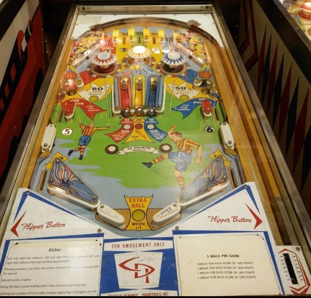

Not to be confused with Kicker (Gottlieb, 1977), an add-a-ball variant of Abra Ca Dabra and Team One (Gottlieb, 1975/1977).
There are 5 top lanes.
The leftmost top lane scores 20 points, lights the number 1, and lights the red bumper and left captive ball.
The second lane scores 30 points and lights number 2.
The middle lane scores 30 points, and can be lit for Special by collecting all of the numbers 1-6.
The fourth lane scores 30 points and lights number 3.
The rightmost top lane scores 20 points, lights number 4, and lights the blue bumper and right captive ball.
The center yellow bumper always scores 1 point. The red and blue bumpers score 1 point, or 10 when lit.
In addition to 1-2-3-4 being collected at the top lanes, there is also a 5 and a 6 at the middle left and right side lanes. These score 10 points, and also light the red (left) or blue (right) pop bumper and captive ball. Collecting all of 1-2-3-4-5-6 lights the center top lane and center captive ball for a Special. Kicker has both a replay and an add-a-ball variant, so the value of a Special can be either a free game or an extra ball.
The side saucers score 50 points. On the final ball of the game only, the saucers are lit for extra ball 1/10th of the time based on 1-point switch hits.
The left and right captive balls score 10 points, or 100 when lit. To light the left captive ball: make the leftmost top lane, the middle left side lane, or hit the captive ball itself. The right captive ball is lit similarly using the rightmost top lane or middle right side lane. The center captive ball scores 30 points, and is lit for Special when 1-2-3-4-5-6 has been completed. Draining the ball causes the red and blue bumpers and captive balls to turn off if they are lit.
There are no in lanes. 2-inch mini flippers back up directly to the slingshots, which score 1 points. Out lanes score 10 points. The rollover buttons just above the flippers score 1 point or 10 when lit, and are lit when the corresponding pop bumper and captive ball are lit (red for left, blue for right). Maximum 1 extra ball per ball in play. There is no end of ball bonus. I have not confirmed the tilt penalty, but tilt likely ends game.
The below picture of Kicker's playfield was taken from Pinside (image #1047578).
